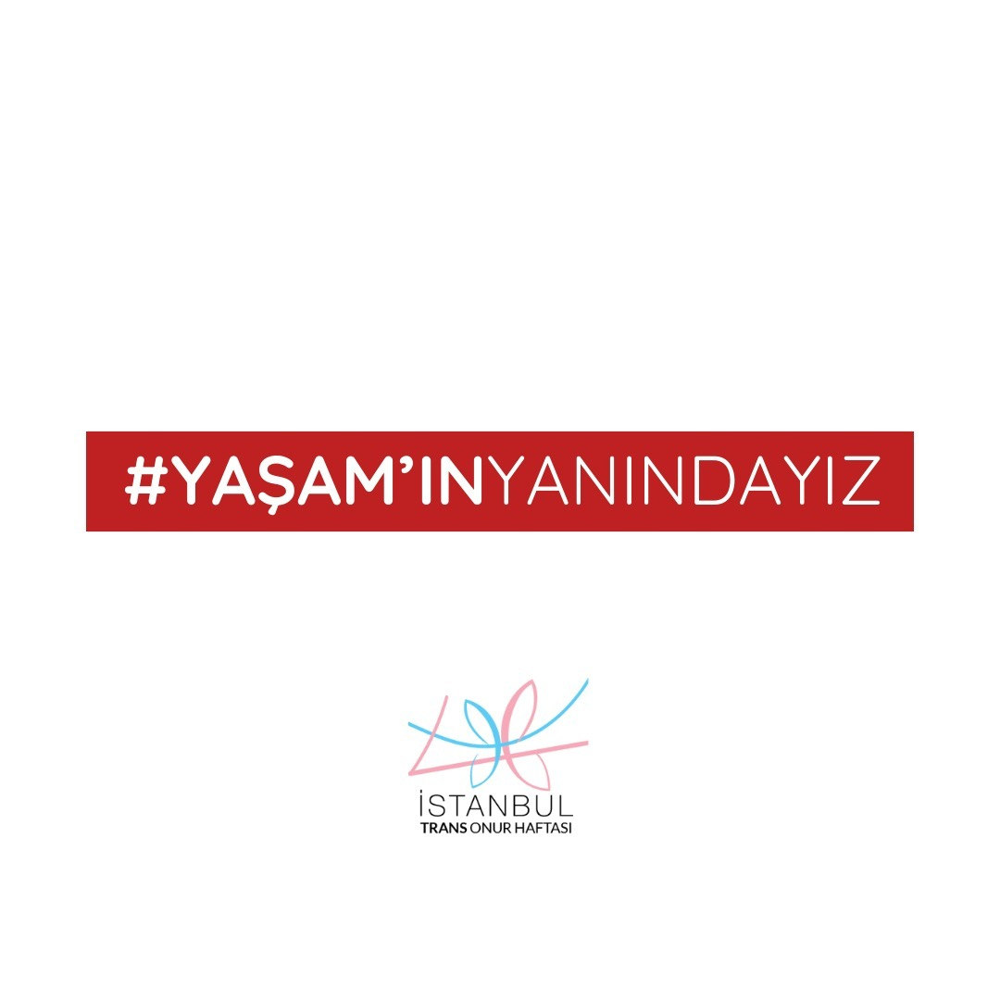
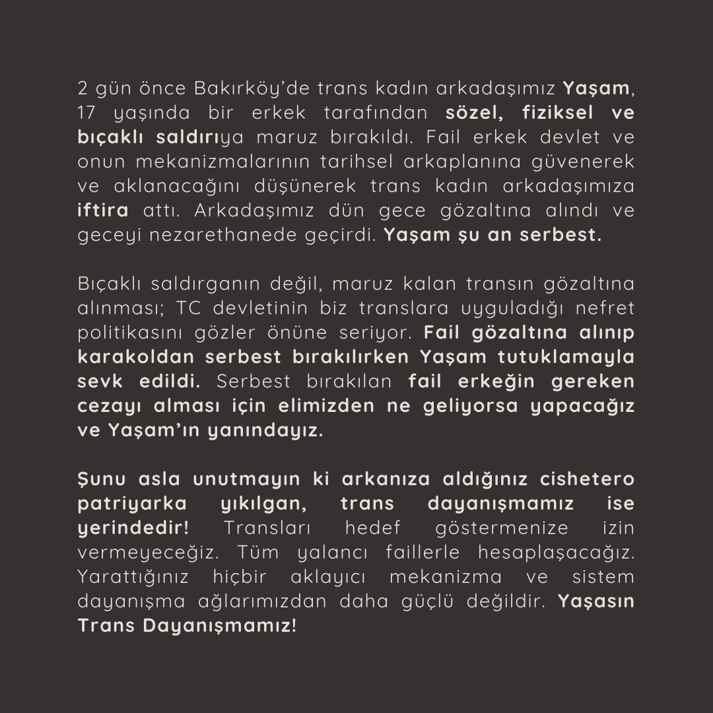

2024-08-22 04:03:00
2 gün önce Bakırköy’de trans kadın arkadaşımız Yaşam, 17 yaşında bir erkek tarafından sözel, fiziksel ve bıçaklı saldırıya maruz bırakıldı. Fail erkek devlet ve onun mekanizmalarının tarihsel arkaplanına güvenerek ve aklanacağını düşünerek trans kadın arkadaşımıza iftira attı. Arkadaşımız dün gece gözaltına alındı ve geceyi nezarethanede geçirdi. Yaşam şu an serbest.
Bıçaklı saldırganın değil, maruz kalan transın gözaltına alınması; TC devletinin biz translara uyguladığı nefret politikasını gözler önüne seriyor. Fail gözaltına alınıp karakoldan serbest bırakılırken Yaşam tutuklamayla sevk edildi. Serbest bırakılan fail erkeğin gereken cezayı alması için elimizden ne geliyorsa yapacağız ve Yaşam’ın yanındayız.
Şunu asla unutmayın ki arkanıza aldığınız cishetero patriyarka yıkılgan, trans dayanışmamız ise yerindedir! Transları hedef göstermenize izin vermeyeceğiz. Tüm yalancı faillerle hesaplaşacağız. Yarattığınız hiçbir aklayıcı mekanizma ve sistem dayanışma ağlarımızdan daha güçlü değildir. Yaşasın Trans Dayanışmamız!

